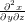

Anleitung zu den TEXcalc LATEX2ε-Packeten
Hans Freitag (und einige andere)
17. Februar 2013
Dieses Dokument gibts als PDF zum Downloaden auf http://www.nawi.at/~zem/texcalc/texcalc.de.pdf
TEXcalcBesteht aus drei Komponenten.
- texcalc.py ist ein in python geschriebener Taschenrechner der das Pythonmodul
uncertainties benutzt.
- texcalc.sty ist ein LATEX2ε-Packet mit dem Berechnungen mit Messunsicherheiten direkt
aus dem LATEX2εDokument heraus möglich sind.
- Zusatz styles die zwar nicht direkt etwas mit TEXcalczu tun haben, aber für das Schreiben
von Physikprotokollen Nützlich sein können. Die beiden zusatzpackete gliedern sich
in:
- physictools.sty eine allgemeine toolsammlung die das Leben leichter machen soll
- anfpralayout.sty Layoutparameter Deckbletter etc, die wahrscheinlich nie einmal
irgendwo anders als an der Uniwien in der Physik verwendet werden.
Die Contrib Packete sind eine Sammlung von LATEX2ε-Makros von Studierenden der Fakultät,
die sich im Laufe des Studiums als Hilfreich erwiesen haben.
Inhaltsverzeichnis
1 Features/Benutzung
1.1 Taschenrechner
Der Taschenrechner wird mit dem Komando texcalc.py
gestartet .
Abbildung 1 zeigt einen Screenshot des Taschenrechners an. Zahlen mit Unsicherheiten können durch
f(number,uncertainty) notiert werden. In dem Prompt kann alles berechnet werden was in Python
berechnet werden kann.
1.2 Berechnungen direkt im LATEXFile
Die Rechnungen können auch direkt im LaTeX File durchgeführt werden, indem sie innerhalb des calc environments
notiert werden
\begin{calc}
x=f(23.55,0.02)
#r 23.55+/-0.02
def foo(x):
y=x**2
return y
z=33
#r 33
foo(z)
#r 1089
y=f(222.0,22)
#r 222.0+/-22.0
a=f(24423.0,220)
#r 222.0+/-22.0
\end{calc}
Die #r kommentarzeilen werden von texcalc.py automatisch eingefügt um die Fehlersuche und die
Übersicht zu erleichtern. Sie enthalten das Ergebnis der letzten Variablenzuweisung bzw des letzten
Statements.
Die errechneten Werte können jetzt mit dem val komando im Dokument verwendet werden. Der
Parameter [2] gibt dabei bei einer normalen Zahl die zu rundenden Nachkommastellen an. Bei einer
Zahl mit Unsicherheit gibt er die Anzahl der Signifikanten Stellen an, die dann automatisch gerundet
und eingefügt werden. Default ist 2. Beispiel:
$$x_{5sigDigits}=\val[5]{x}$$
$$x_{2sigDigits}=\val{x}$$
$$x^2=\val{foo(x)}$$
$$z=\val{z}$$
$$y=\val{y}$$
$$a=\val{a}$$
Wird zu:
Übersetzt werden kann ein solches LATEXFile mit folgenden Komandos:
texcalc.py Datei.tex --> Fügt die #r kommentarzeilen ein
texcalc.py -c Datei.tex --> erzeugt ein pdf texcalc ruft pdflatex auf
pdflatex --shell-escape Datei.tex --> Erzeigt ein pdf pdflatex ruft texcalc auf
lualatex --shell-escape Datei.tex --> Das gleiche wie pdflatex
texcalc.py -C -y Datei.tex --> Wie -c nur werden alle \val{} fest durch die
werte ersetzt, der prozess ist nicht reversibel,
aber nützlich um schnell noch manuelle aenderungen
vorzunehmen.
2 Download
2.1 Abhängigkeiten
- Eine LaTeX Distribution wie MikTeX oder TeXlive
- Python
- Python-numpy
- Python-uncertainties
2.2 Dieses Packet
2.3 Software für Windows
2.4 Software für Linux(Debian)
apt-get install texlive latexila python python-numpy python-uncertainties
(Wer will kann und soll natürlich auch vim verwenden, oder meinetwegen auch Emacs.)
2.5 Entwicklung und Fehlerbehebung
Mitentwickeln kann jeder. Dafür brauchst du das Versionskontrollsystem GIT
einfach das Repository klonen, entweder von nawi.at:
git clone http://www.nawi.at/git/texcalc
Oder über github.com Was sich so tut kannst du im gitweb nachlesen:
http://www.nawi.at/gitweb/?p=texcalc;a=summary oder halt auf github.com
Wenn du einen Patch machen willst kannst du
git format-patch origin/master
verwenden, und den Patch an zem@nawi.at mailen oder auf github einen fork anlegen und
patchen.
3 Installation
3.1 Linux
Installation auf Linux geht mit:
make install install-contrib
3.2 Windows
Hoffentlich gibts bald ein install.bat script oder sowas.
Grundsätzlich müssen alle .sty in miktex eingebunden werden, wie das geht ist in der MikTex Doku
beschrieben:
http://docs.miktex.org/manual/localadditions.html
http://docs.miktex.org/manual/texfeatures.html#includedirectory
Dann muss texcalc.py noch irgendwo hingelegt werden wo es im Pfad liegt, bzw der Pfad muss
angepasst werden. miktex/bin kann funktionieren. ;-)
3.3 Bekannte TEXcalcProbleme und deren Lösungen
3.3.1 Interger vs float
Da TEXcalcin python rechnet muss auch den dortigen Datentypen rechnung getragen werden. Eine
Zahl die ohne Kommastelle angegeben wird, wird als Integer (ganze Zahl) interpretiert, und auch so
dividiert. Beispiel:
>>> 23/4
5
>>> 23.0/4.0
5.75
>>>
Also am besten immer zahl.0 schreiben.
4 Contrib
4.1 physictools Packet
In der Preambel:
\usepackage{physictools}
4.1.1 Ergebnis Einleitung
In der Ergebnisse Section kommen einige sätze immer wieder vor. Hier die Templates:
\skalaerr
\mverr
\fiterr\usedqti
\usedgnuplot
\stopwatcherr
\multimetererr
\earthGerr
\syserr\usedtexcalc
\\
Und das wird zu:
Als Fehler für die Ablesegenauigkeit von Messskalen wurde die kleinste Skaleneinteilung verwendet.
Als Fehler für Mittelwerte wurde die Standardabweichung verwendet. Der Fehler der Fitfunktionen
wurde von der Plot Software ermittelt. Als Plot Software wurde QTIplot verwendet. Als Plot
Software wurde GNUplot verwendet. Als Fehler für Zeitmessungen mit der Stoppuhr wurde
die letzte Ziffer der Digitalanzeige ±1 verwendet. Als Fehler für Messungen mit dem
Multimeter wurde die letzte Ziffer der Digitalanzeige ±1 verwendet. Als Wert für die
Gravitationsbeschleunigung auf der Erde wurde g = (9,81 ± 0,03) verwendet. Der Messfehler
ergibt sich aus der größeren Differenz der Literaturwerte für die Gravitation an Pol und
Äquator zum Mittelwert. Systematische Fehler wurden mit Gausscher Fehlerfortpflanzung
ermittelt. Die Gaussche Fehlerfortpflanzung wurde mit der Software TEXcalc durchgeführt.
Das geht natürlich auch auf Englisch ohne ngerman packet:
As uncertainty for measuring scales the smallest scale gaduation was used. As uncertainty for
meanvalues the standard deviation was used. The uncertaintys for fit funktions where collected from
the plot software. As plot software QTIplot was used. As plot software GNUplot was used. As
uncertainty for time measurements with the stopwatch the last digit of the display ±1 was
used. As uncertainty for measurements with the multimeter the last digit of the display ±1
was used. As value for the acceleration of gravity on earth g = (9,81 ± 0,03) was used.
The uncertainty results from the bigger difference of the literature values of gravitation at
pole and equator to the mean value. Systematic errors where calculated with gaussian
error propagation. The gaussian error propagation was done by the software TEXcalc.
4.1.2 image commands
\image{texcalc.png}{Ein Screenshot des texcalc.py Taschenrechners}
is actually a shortcut for:
\begin{figure}[h]
\centering
\includegraphics[width=0.7\textwidth]{texcalc.png}
\caption{Ein Screenshot des texcalc.py Taschenrechners}
\label{texcalc.png}
\end{figure}
4.1.3 23 × 1010
$$23\E{10}$$
4.1.4 
$$
\ddt
$$
4.1.5 
$$
\dnach{x}
$$
4.1.6 
$$
\ddnach{x}{y}
$$
4.1.7 
$$
\dddnach{x}{y}{z}
$$
4.1.8
$$
\dznach{x}{y}
$$
4.1.9
$$
\vnabla
$$
4.1.10
$$
\evec{x}
$$
4.1.11 ⟨x|
$$
\bra{x}
$$
4.1.12 |x⟩
$$
\ket{x}
$$
4.1.13 ⟨x|y⟩
$$
\bracket{x}{y}
$$
4.1.14 ↑
$$
\up
$$
4.1.15 ↓
$$
\down
$$
4.1.16 ↑↑
$$
\upup
$$
4.1.17 ↓↓
$$
\downdown
$$
4.1.18 ⟨x|y|x⟩
$$
\sandwich{x}{y}
$$
4.1.19
$$
\fsqrt{x}{y}
$$
4.2 anfpralayout
In der Preambel:
\usepackage{anfpralayout}
oder
\usepackage[option]{anfpralayout}
Optionen können sein:
-
basti
- Sebastians Layout Parameter (margin=2.5cm)
-
motz
- Motz’s Layout Parameter
4.2.1 Titelseite
Für das Anfängerpraktikum ist eine Besondere Titelseite nötig, die kann natürlich ganz einfach gesetzt
werden:
\semester{SoSe 2011}
%\fakulty{Fakultät für Sonstwas}
%\title{Physikalisches Praktikum\\für Lehramtskandidaten}
\experiment{1. Fnord}
%\date{abgabedatum}
\author{Hans Freitag}
\group{3}
\supervisor{someone}
\makeanfpratitle
Die auskommentierten Parameter sind optional. Und so siehts
aus :
Experiment (Nr., Titel):
1. Fnord